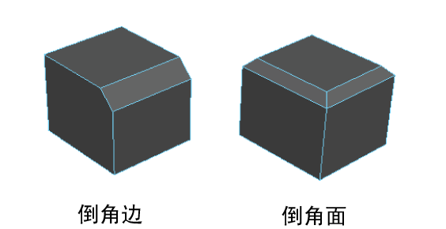
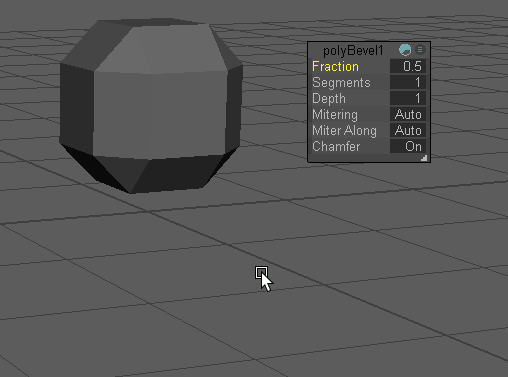

倒角会将选定的每条边展开为一个新面，为多边形网格的边添加圆角。请参见“倒角”(Bevel)命令。
对边或面进行倒角
- 选择网格对象，或者选择要进行倒角的边或面。
注： 如果选择网格对象，Maya 会倒角网格中的每条边。
- 从主菜单中选择“编辑网格 > 倒角”(Edit Mesh > Bevel)，或者在“建模工具包”(Modeling Toolkit)中单击
 。
。
Maya 将对选定边或选定面的周长边进行倒角。
注： 执行倒角操作后，将会保留逐面着色器指定。 - 在显示的视图中编辑器中，调整 polyBevel 属性。
提示： 在标记菜单（Ctrl + Shift + 单击鼠标右键）中选择属性，以使选择成为“视图中编辑器”(In-View Editor)中的活动属性。可以使用 Ctrl + Tab 键（从列表底部循环浏览到顶部）或 Ctrl + Shift + Tab 键（从列表顶部循环浏览到底部）循环浏览属性列表。